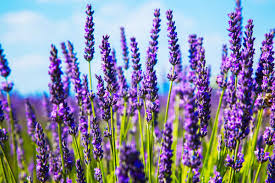
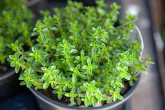

plants
Rosemary
Rosemary known for its fragrant needle-like leaves, rosemary is a perennial herb native to the Mediterranean region. It's not just a culinary delight; its aromatic oils have been used for centuries in traditional medicine for improving memory and concentration.
Sunflower
Sunflower With its vibrant yellow petals and towering stature, the sunflower is a symbol of happiness and vitality. Not only does it brighten gardens, but its seeds are also a nutritious snack, packed with essential nutrients like vitamin E and selenium.
Fern
Ferns, with their delicate fronds, add a touch of elegance to shaded gardens. These ancient plants reproduce via spores rather than seeds and thrive in moist, shady environments, making them perfect for adding lush greenery to dim corners of your home.
Tulip

Tulips are bulbous plants with brightly colored cup-shaped flowers. They are popular ornamental plants, especially in gardens and floral arrangements. Tulips come in a variety of colors and are often associated with spring.
Lavender
Lavender is a fragrant herb with purple flowers. It is widely used in aromatherapy, perfumes, and as a culinary herb. Lavender is also known for its calming and soothing properties.Lavender, prized for its fragrance, well-drained soil.
Daisy
Daisies are common wildflowers characterized by their white petals and yellow centers. They are often seen in meadows and grassy areas and are known for their simple and cheerful appearance.
Ivy
Ivy is a climbing or trailing evergreen plant with dark green leaves. It is often grown as a ground cover or as a decorative vine on walls and fences.
Basil
Basil is a culinary herb with aromatic leaves that are commonly used in cooking. It is known for its strong flavor and is a key ingredient in dishes like pesto.
Thyme
Thyme is a low-growing herb with small, aromatic leaves. It is used as a culinary herb to flavor a variety of dishes, especially in Mediterranean cuisine.